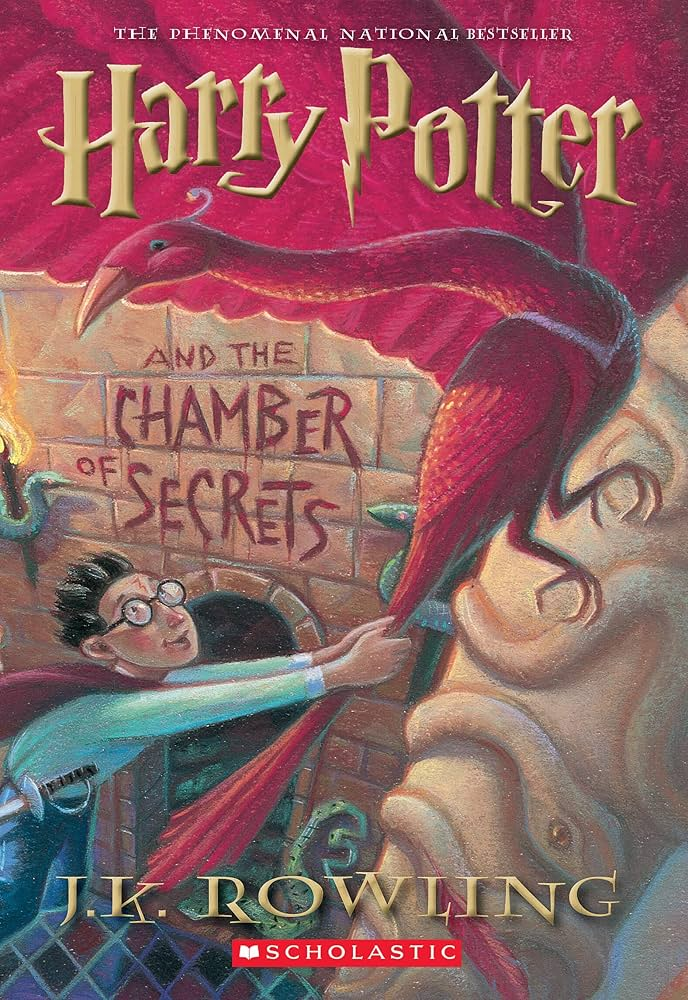

|  |
Harry Potter and the chamber of secretsNovel by J. K. RowlingAbout The Book:Harry Potter and the Chamber of Secrets is a fantasy novel written by British author J. K. Rowling and the second novel in the Harry Potter series. The plot follows Harry's second year at Hogwarts School of Witchcraft and Wizardry, during which a series of messages on the walls of the school's corridors warn that the "Chamber of Secrets" has been opened and that the "heir of Slytherin" would kill all pupils who do not come from all-magical families. These threats are found after attacks that leave residents of the school petrified. Throughout the year, Harry and his friends Ron and Hermione investigate the attacks. To Buy The Book From Here |